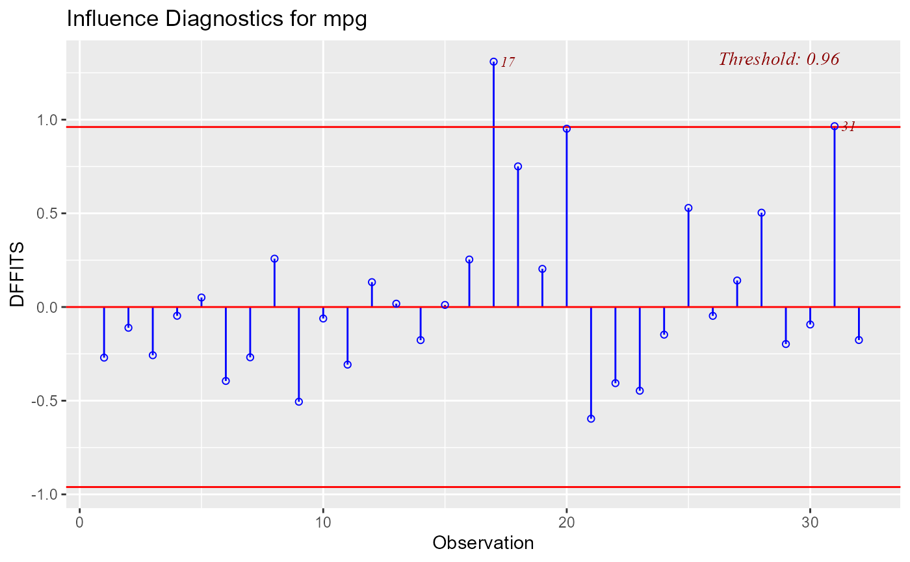
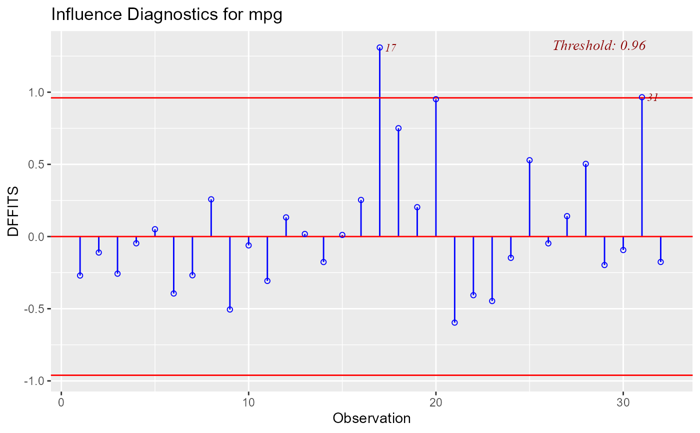

Plot for detecting influential observations using DFFITs.
Value
ols_plot_dffits returns a list containing the
following components:
- outliers
a
data.framewith observation number andDFFITsthat exceedthreshold- threshold
thresholdfor classifying an observation as an outlier
Details
DFFIT - difference in fits, is used to identify influential data points. It quantifies the number of standard deviations that the fitted value changes when the ith data point is omitted.
Steps to compute DFFITs:
Delete observations one at a time.
Refit the regression model on remaining \(n - 1\) observations
examine how much all of the fitted values change when the ith observation is deleted.
An observation is deemed influential if the absolute value of its DFFITS value is greater than: $$2\sqrt((p + 1) / (n - p -1))$$
A size-adjusted cutoff recommended by Belsley, Kuh, and Welsch is $$2\sqrt(p / n)$$ and is used by default in olsrr.
where n is the number of observations and p is the number of predictors including intercept.
References
Belsley, David A.; Kuh, Edwin; Welsh, Roy E. (1980). Regression Diagnostics: Identifying Influential Data and Sources of Collinearity.
Wiley Series in Probability and Mathematical Statistics. New York: John Wiley & Sons. ISBN 0-471-05856-4.
Examples
model <- lm(mpg ~ disp + hp + wt + qsec, data = mtcars)
ols_plot_dffits(model)
 ols_plot_dffits(model, size_adj_threshold = FALSE)

ols_plot_dffits(model, size_adj_threshold = FALSE)
